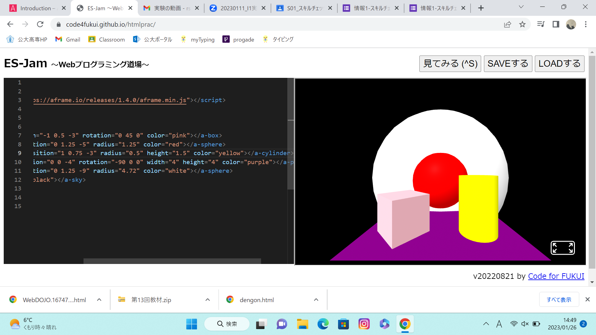
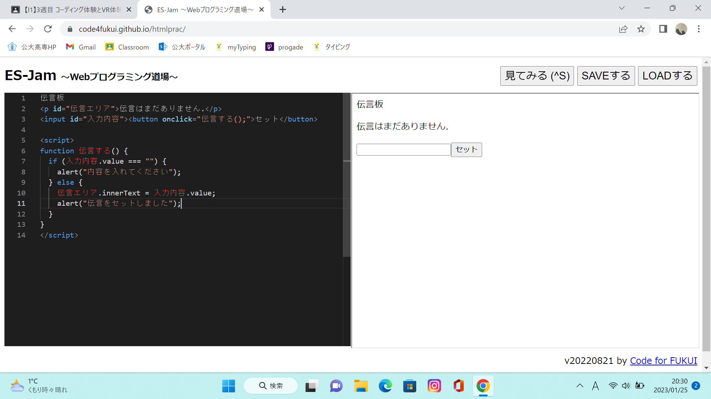

第3週目
3-1 JavaScript体験：VR空間を作る

伝言板
1.内容
A-FrameとWedプログラミング道場というサイトを使ってVR空間を作った．A-Frameをもとにして色を変化させたり，大きさを変えたりなどした．
2.感想
初めはコンソールが英語ばかりでどんな空間になっているのか全く分からなかった．だが，数字や色を変えていくと空間が変わっていくのを見てコンソールがどうなっていたらどんな空間になるのかがなんとなくわかるようになった．
3-2 JavaScript体験：伝言プログラムを作る

伝言板
1.内容
Webプログラミング道場というサイトでJavaScriptというプログラミング言語を使って作成した．
2.感想
情報の課題でJavaScriptは触っていたため，詰まることなく進めることが出来た．だが，ボックスは作ったことがなく初めて見るエディタで新鮮だった．
3-3 JavaScriptプログラムの３次元空間の体験
1.内容
3次元空間に入り，空間にある物体を掴んだりボールを投げたりした．
2.感想
日頃からゲームをしないため，操作が少し難しかった．実際には現実にないものを掴み投げるという動作が改めて考えるとすごいことだと思った．